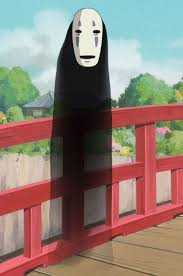

Sem rosto

Sem rosto é um personagem do filme A Viagem de Chihiro. Ele se mostra capaz de reagir às emoções e ingerir outros indivíduos a fim de absorver sua personalidade e características físicas.
Habilidades
Mimetismo: Sempre que ele come uma criatura, ele usa sua voz e suas habilidades. Por exemplo, depois de comer Aogaeru, ele fala com a voz de Aogaeru e começa a pular como um sapo. Ele também assume a personalidade de Aogaeru. Se ele comer mais criaturas, ele falará com vozes diferentes simultaneamente. Devido a esta habilidade, seu gênero não é claro.
Alquimia: Ele pode transformar lama e sujeira em objetos como ouro.
Absorção: Ele pode comer de tudo, seja comida ou bebidas alcoólicas. Isto pode ser uma extensão de sua capacidade de imitar.
Personalidade
Sem rosto é um espírito solitário que começa a seguir Chihiro Ogino depois de ter desenvolvido um interesse por sua sinceridade. Seu vocabulário consistia em grunhidos e gemidos, em oposição a palavras coerentes. Sem saber muito sobre o balneário ou sobre outros espíritos em geral, Sem rosto aprendeu pelo exemplo e se adaptou ao seu ambiente.
Exposto aos pensamentos corruptos e à ganância dos trabalhadores, ele rapidamente cresceu para abranger suas personalidades, esperando que, com seu esforço para ser como aqueles ao redor de Chihiro, acabasse por ganhar o afeto dela. Embora isso acabasse produzindo o efeito oposto, Chihiro foi de certa forma fiel a ele depois que ela o convidou e aceitou a ajuda dele.
O Sem rosto fica obcecado com Chihiro, e quer vê-la e só a ela. Ele se torna extremamente volátil após ser alimentado pelo bolinho emético do Espírito do Rio por Chihiro, e, enquanto foge do espírito obviamente agora hostil, ela o chama duas vezes para segui-la. Ela o aceita como companheiro na viagem de trem a caminho do Fundo do Pântano depois que ele se acalma e sai do Balneário. Nesta fase, Sem rosto não é mais agressivo e é bastante dócil, obedecendo às ordens de Chihiro, como "sente-se" e "comporte-se".
Como um ser monstruoso e fora de controle, ele exibe todos os traços negativos daqueles que ele havia engolido (mais significativamente, Aogaeru), tornando-se uma criatura arrojada, arrogante, barulhenta e egoísta, cuja obsessão por Chihiro provou ser preocupante para todos ao seu redor.
No final do filme, Sem rosto se encontra com Zeniba, outra bruxa que trabalha sozinha, ao contrário de Yubaba, que dirige seu balneário com uma hierarquia complexa. Talvez tentando igualar as regras da nova sociedade minúscula, ele começa a trabalhar costurando e parece proficiente nisso. Feliz com seu novo ambiente, ele aceita a proposta de Zeniba de ficar com ela como aprendiz.
Aparência física
Quando foi introduzido pela primeira vez, o Sem rosto apareceu num estado semi-transparente enquanto se deslocava para dentro e para fora da visibilidade. Seus órgãos eram visíveis, pulsando em vários estados. Sua figura se assemelha à de um tubo longo e preto. Embora não se saiba se Sem rosto tem um corpo físico, é mostrado que ele pode desenvolver braços e pernas com a capacidade de deixar pegadas enquanto caminha. Uma máscara sinistra, sem expressão, com destaque em violeta cinza é pintada em sua espécie de "cabeça", e enquanto há uma "boca" pintada na máscara, o Sem rosto mostrou que sua boca real, habilmente escondida, é maior do que a presente em sua máscara.